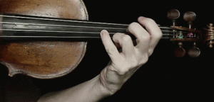
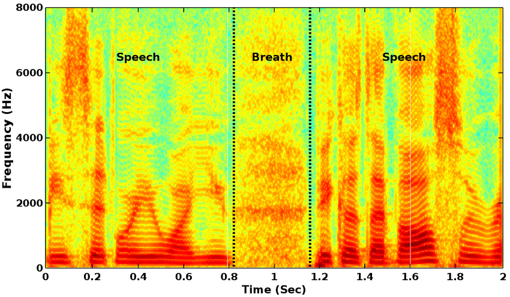
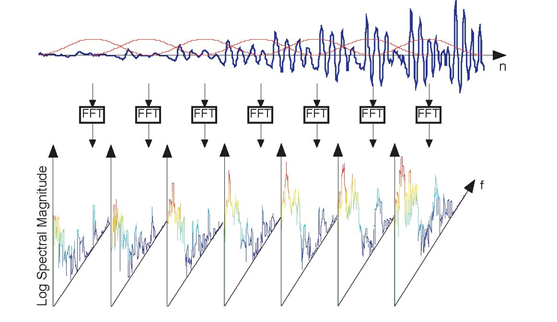

%matplotlib notebook
import numpy as np
import scipy.signal
import scipy.fft as sfft
import matplotlib.pylab as plt
from matplotlib import animation, patches, rc
import ipywidgets as widgets
import matplotlib as mpl
rc('animation', html='html5')
rc('savefig', dpi=80)
rc('figure', dpi=80)
from IPython.display import YouTubeVideo, HTML, Audio
1. Espectrograma¶
1.1. ¿Qué ocurre con el espectro de una señal si su frecuencia cambia en el tiempo?¶
Consideremos por ejemplo este ejemplo sencillo de una señal donde la frecuencia cambia abruptamente en un tiempo determinado
Sea por ejemplo \(f_1=440\) Hz y \(f_2 = 220\) Hz. Si la graficamos:
Fs = 44100
f1, f2 = 440, 220
t = np.arange(-0.5, 0.5, step=1/Fs)
N = len(t)
s = np.concatenate((np.cos(2.0*np.pi*f1*t[:N//2]),
np.cos(2.0*np.pi*f2*t[N//2:])))
fig, ax = plt.subplots(figsize=(7, 3), tight_layout=True)
ax.plot(t, s);
ax.set_xlim([-0.05, 0.05])
ax.set_xlabel('Tiempo [s]');
y si la escuchamos
Audio(s, rate=int(1./dt))
---------------------------------------------------------------------------
NameError Traceback (most recent call last)
<ipython-input-3-b0a38ffff7bc> in <module>
----> 1 Audio(s, rate=int(1./dt))
NameError: name 'dt' is not defined
Ahora, si calculamos la FFT de la señal para obtener su espectro tenemos que
fig, ax = plt.subplots(figsize=(7, 3), tight_layout=True)
freq = sfft.rfftfreq(n=N, d=1./Fs)
S = np.absolute(sfft.rfft(s))
ax.plot(freq, S);
ax.set_xlim([0, 1000]);
ax.set_xlabel('Frecuencia [Hz]');
La DFT/FFT nos entrega un «resumen» de todas las frecuencias en la señal
1.2. Frecuencia instantanea¶
Hasta ahora hemos estudiando señales donde la frecuencia es constante en el tiempo
Definamos la frecuencia instantanea como la tasa de cambio de la fase o ángulo en función del tiempo
Una señal sinusoidal con una frecuencia que cambia en el tiempo sería entonces
Notemos que si la frecuencia fuera constante, es decir \(f(t) = f\) \(\forall t\), entonces \(\int_0^t f(\tau) d\tau = t f\) y recuperamos \(A\cos(2\pi t f + \phi)\)
A continuación veamos algunos ejemplos de señales donde la frecuencia cambia con el tiempo
1.2.1. Ejemplo: Chirrido o Chirp¶
Un chirp es una señal cuya frecuencia varía suavemente entre un valor inicial y otro final
Esta variación puede seguir una forma lineal
o también no lineal (cuadrática, exponencial, etc)
Los chirp tienen aplicaciones en radar y sonar. También sirven como modelo para el canto de las aves
Podemos crear un chirrido sintético usando scipy.signal.chirp como se muestra a continuación
Fs = 44100
f_inicio, f_fin = 4000, 2000
t = np.arange(0, 0.5, step=1./Fs);
s = 0.1*scipy.signal.chirp(t, f0=f_inicio, f1=f_fin, t1=t[-1], method='quadratic')
fig, ax = plt.subplots(figsize=(7, 3), tight_layout=True)
ax.plot(t, s);
ax.set_xlim([0, 0.025])
ax.set_xlabel('Tiempo [s]')
Audio(s, rate=Fs, normalize=False)
1.2.2. Ejemplo: Frecuencia Modulada (FM)¶
La FM es una tecnología para guardar información en la frecuencia de una onda electromagnética. Es un tipo de codificación que se usa mucho en transmisiones de radio.
La onda electromagnética se llama señal portadora. En radio corresponde a una sinusoide con una frecuencia central en el rango de 88 a los 108 [MHz]
La información se llama señal modulada. En radio corresponde tipicamente a una señal de voz o a una canción, es decir que está en el rango de los 20 [Hz] a 20 [kHz] (rango audible humano)
Una señal en el rango audible puede viajar algunos metros. En cambio, si va codificada en la señal portadora puede viajar cerca de 50 km
El siguiente esquema muestra la operación que realiza una estación de radio que transmite señales

La radio que recibe la señal debe realizar el proceso inverso, es decir decodifica la información a partir de la frecuencia de la señal que está recepcionando
Matemáticamente la señal modulada \(s_m(t)\) modifica la frecuencia central \(f_c\) de la señal portadora como sigue
donde \(K\) es el coeficiente de modulación y \(s(t)\) es la señal que finalmente viaja por el medio
Cada estación de radio transmite su información \(s_m(t)\) usando una frecuencia portadora \(f_c\) distinta para no traslaparse
1.2.3. Ejemplo: Vibrato¶
Un vibrato es un efecto musical que consiste en una variar periódicamente el tono de una nota.
Por ejemplo, un violinista logra este efecto presionando una cuerda y luego moviendo su dedo de forma regular como muestra la siguiente animación (en cámara lenta)
{kind=link}
El vibrato es un caso particular de modulación de frecuencia. Si consideremos sólo tonos puros podríamos definir \(s_m(t) = \cos(2\pi f_m t)\), con lo que nos queda la siguiente señal
De la expresión tenemos que
\(f_c\) es la frecuencia o tono central
\(f_m\) es la velocidad a la que cambia el tono central
\(K/f_m\) es la amplitud del cambio del tono cnetral
¿Cómo se ve y escucha esta señal?
Fs = 44100
A_c, K, f_c, f_m = 1, 25, 440, 8
t = np.arange(0, 2, step=1/Fs)
sm = np.cos(2.0*np.pi*f_m*t)
s = A_c*np.cos(2.0*np.pi*f_c*t + (K/f_m)*np.sin(2.0*np.pi*f_m*t))
fig, ax = plt.subplots(figsize=(7, 3), tight_layout=True)
ax.plot(t, s, label='portadora', alpha=0.75)
ax.plot(t, sm, label='modulada')
ax.set_xlabel('Timepo [s]')
ax.set_xlim([0, 0.3])
ax.legend()
Audio(s, rate=Fs)
1.3. Representación en tiempo y frecuencia¶
Para estudiar una señal cuya frecuencia cambia en el tiempo debemos estudiar la evolución temporal de su espectro
La herramienta más utilizada para esto se llama espectrograma
El espectrograma es una representación visual de la energía de señal distribuida en el tiempo y en la frecuencia.
{kind=link}
El eje horizontal representa tiempo (segundos)
El eje vertical representa frecuencia (Hz)
Se usa color para representar la intensidad
1.3.1. ¿Cómo se obtiene el espectrograma?¶
Para calcular el espectrograma se utiliza la short-time Fourier transform (STFT)
Para el caso de una señal discreta la STFT se define como
Notemos como la STFT depende del tiempo (índice m) y de la frecuencia (índice k)
En la práctica la STFT consiste en
multiplicar la señal por una ventana localizada \(w[n-m]\)
calcular la FFT sobre esa ventana
Esto se repite para distintas ventanas como muestra el siguiente diagrama donde la linea azul es la señal y las lineas rojas son las ventanas desplazadas
Finalmente el espectrograma consiste en juntar los espectros de amplitud obtenidos para cada ventana
Notemos que las ventanas pueden traslaparse para mejorar la resolución temporal del espectrograma
1.3.2. Ventanas y espectrogramas¶
Para calcular el espectrograma debemos seleccionar
un tipo de ventana
un largo de ventana
un traslape de ventana
Como vimos en la lección de «Fuga espectral» el tipo y largo de la ventana influyen de manera importante en el resultado
Una ventana debería ser suave para evitar agregar lóbulos laterales
Una ventana debe ser lo suficientemente larga para no perder resolución en frecuencia
Una ventana debe ser lo suficientemente corta para no perder resolución temporal
1.3.3. Espectrograma en Python¶
Podemos usar la función de scipy.signal.spectrogram cuyos parámetros más relevantes son
spectrogram(x, # Señal
fs=1.0, # Frecuencia de muestreo
window=('tukey', 0.25), # Tipo de ventana y parámetros de ventana
nperseg=None, # Largo de la ventana en número de muestras
noverlap=None, # Cantidad de traslape, por defecto es 1/8 del largo de ventana
...
)
Esta función retorna
f: Un arreglo con las frecuencias del espectrograma de largo M
t: Un arreglo con los tiempos de las ventanas de largo N
Sxx: Una matriz de MxN con los valores del espectrograma
Finalmente podemos graficar el espectrograma usando la función pcolormesh de matplotlib
A continuación veremos dos ejemplos
1.3.4. Ejemplo: Espectrograma de un vibrato¶
La frecuencia de un vibrato sigue la formula
A continuación se muestra tres espectrogramas con distinto largo de ventana
La linea linea negra punteada corresponde la formula que se muestra arriba
En este caso la ventana de 46 [ms] representa mejor la señal
La ventana de 11 [ms] tiene resolución temporal superior pero resolución frecuencial mala: gran dispersión en el eje vertical
La ventana de 180 [ms] tiene resolución frecuencial superior pero resolución temporal mala: gran dispersión en el eje horizontal
En todos los espectrogramas se usó una ventana de Kaiser con \(\beta=6\)
Fs = 44100
A_c, K, f_c, f_m = 1, 25, 440, 8
t = np.arange(0, 2, step=1/Fs)
sm = np.cos(2.0*np.pi*f_m*t)
s = A_c*np.cos(2.0*np.pi*f_c*t + (K/f_m)*np.sin(2.0*np.pi*f_m*t))
beta = 6.
fig, axs = plt.subplots(3, 1, figsize=(7, 9), tight_layout=True, sharex=True, sharey=True)
for ax, Nw in zip(axs, [512, 2048, 8192]):
freqs, times, Sxx = scipy.signal.spectrogram(s, fs=Fs, nperseg=Nw,
noverlap=Nw//1.5, window=('kaiser', beta))
ax.pcolormesh(times, freqs, Sxx, cmap=plt.cm.Reds, shading='auto');
ax.plot(t, f_c + K*sm, 'k--', label='Fórmula vibrato')
ax.set_ylabel('Frequencia [Hz]');
ax.set_title(f"Ventana de duración {Nw/Fs:0.4f} [s]")
axs[-1].set_ylim([200, 700])
axs[-1].set_xlabel('Tiempo [s]');
1.3.5. Ejemplo: Espectrograma del chirp¶
Veamos como evoluciona la frecuencia para el chirp que escuchamos antes (transición cuadrático)
La conclusión es similar al caso anterior
Fs = 44100
f_inicio, f_fin = 4000, 2000
t = np.arange(0, 0.5, step=1./Fs);
s = 0.1*scipy.signal.chirp(t, f0=f_inicio, f1=f_fin, t1=t[-1], method='quadratic')
beta = 6.
fig, axs = plt.subplots(3, 1, figsize=(7, 9), tight_layout=True, sharex=True, sharey=True)
for ax, Nw in zip(axs, [256, 1024, 4096]):
freqs, times, Sxx = scipy.signal.spectrogram(s, fs=Fs, nperseg=Nw,
noverlap=Nw//1.5, window=('kaiser', beta))
ax.pcolormesh(times, freqs, Sxx, cmap=plt.cm.Reds, shading='auto');
ax.set_ylabel('Frequencia [Hz]');
ax.set_title(f"Ventana de duración {Nw/Fs:0.4f} [s]")
axs[-1].set_ylim([0, 5000])
axs[-1].set_xlabel('Tiempo [s]');
1.3.6. Ejemplo: Espectrograma de una señal de voz¶
Consideremos la siguiente señal de voz humana y su espectrograma
import librosa
Fs = 44100
data, sample_rate = librosa.load("../../data/123.ogg", sr=Fs)
time = np.arange(0.0, len(data)/Fs, step=1/Fs)
Nw = 2048
f, t, Sxx = scipy.signal.spectrogram(data, fs=Fs,
window=('kaiser', 6),
nperseg=Nw, noverlap=Nw//1.5)
fig, ax = plt.subplots(2, figsize=(7, 6), tight_layout=True, sharex=True)
ax[0].plot(time, data);
ax[1].pcolormesh(t, f, np.log10(Sxx+1e-10), cmap=plt.cm.Reds, shading='auto');
ax[1].set_ylabel('Frequencia [Hz]');
ax[1].set_xlabel('Tiempo [s]');
ax[1].set_ylim([0, 2000]);
display(Audio(data, rate=sample_rate))
Podemos observar que
Cada vocal tiene un tono y una distribución de energía distintos
A diferencia de una señal sintética la voz humana es rica en armónicos
A diferencia de una señal sintética hay ruido blanco que contamina el espectrograma